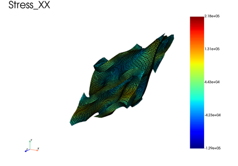
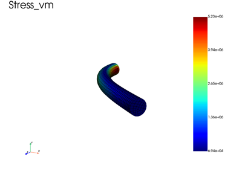
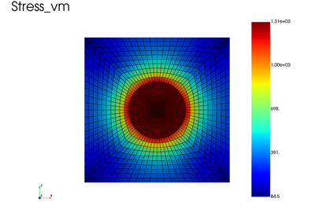
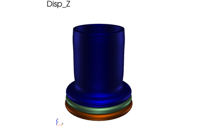

Advanced problems
This section show some advanced capabilities of fedoo.

Off-axis tensile test on a Gyroid unit cell with periodic boundary condition
Off-axis tensile test on a Gyroid unit cell with periodic boundary condition

Finite-strain Neo-Hookean cantilever (rigid cap)
Finite-strain Neo-Hookean cantilever (rigid cap)

Heterogeneous Material: Inclusion in a Matrix under Thermal Loading
Heterogeneous Material: Inclusion in a Matrix under Thermal Loading

Compression of a tube using 2D axisymmetric model
Compression of a tube using 2D axisymmetric model